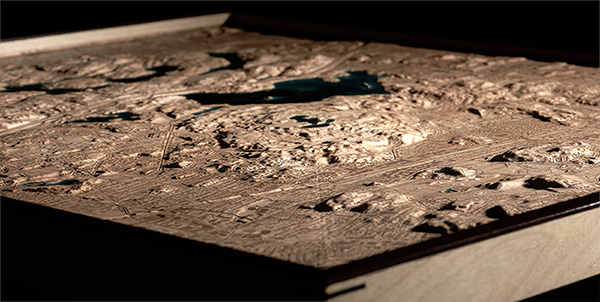

Middlesex Fells Reservation
Greater Boston, Massachusetts
Relief map of the Middlesex Fells trail network and surrounding urban grid. Carved hardwood with laser-etched trails throughout the reservation. City structure provides context for how quickly wild space begins.

Complete topographic composition

Detail of trail network

Side angle showing depth
Made for Firefly Bicycles to guide riders on their first outing aboard a new custom frame. The Fells are where that moment becomes real—where streets give way to dirt, where fit becomes feel.
This needed to be legible, not precious. Trails had to read clearly. Urban edges needed to show relationship: where pavement ends, where terrain rises, how routes connect. The piece works as both map and invitation—a way to see the network whole before riding it piece by piece.
— Artist's Note